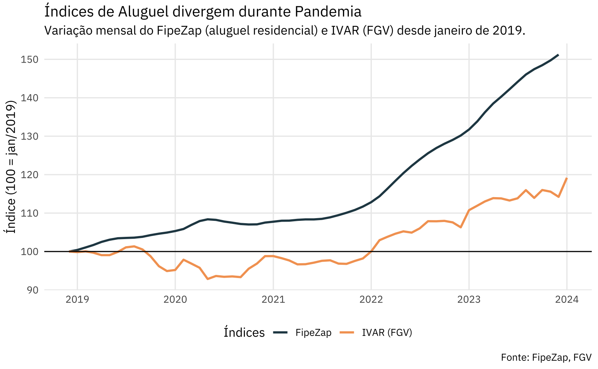

Aluguel e Venda
Os mercados
Os mercados de aluguel e de venda de imóveis são interligados. Em tese, a decisão de comprar ou alugar um imóvel passa pelo preço. Se o aluguel estiver suficientemente “barato”, mais pessoas vão optar pelo aluguel, reduzindo a taxa de vacância e aumentando o preço do aluguel. O preço do aluguel sobe a tal ponto que se torna mais interessante comprar um imóvel do que alugar, incentivando pessoas que alugam a migrar para um apartamento próprio.
Vale notar que o mercado de aluguel é bastante lento. A “migração” do aluguel para um imóvel proprietário não é rápida nem simples. Além do custo monetário há diversos custos de transação envolvidos no processo. De fato, em muitos casos, não é possível fazer uma migração entre um e outro por motivos contratuais.
Por fim, a literatura empírica do tema não é unânime sobre a relação entre os mercados de venda e de aluguel. Um estudo sobre o mercado de Cingapura encontrou evidência de cointegração apenas em regiões específicas e não conseguiu estabelecer a presença de cointegração a nível nacional.
Os dados
As fontes de dados para verificar a dinâmica destes mercados é limitada no Brasil. O FipeZap oferece a série de aluguel e de venda mais extensa. Este índice coleta todos os anúncios online de imóveis publicados no sistema ZapImóveis e constroi um índice de mediana. Os dados são estratificados por número de dormitórios e territorialmente, usando regiões que se baseam nas áreas de ponderação do IBGE.
O gráfico abaixo mostra as séries de aluguel e de venda (residenciais) a nível nacional, agregadas por tipologia. Como se vê, o comportamento das séries é muito similar no périodo 2008-2015. Durante a Crise Econômica, o mercado de aluguel parece sofrer mais do que o mercado de venda. Durante e após a pandemia do Covid-19 ambos os mercados se recuperam com força, mas o mercado de aluguel parece crescer mais.
Na variação acumulada do período, vê-se que o mercado de venda acumulou uma alta significativamente maior do que do mercado de aluguel. A divergência parece ter começado em 2009. A diferença entre as séries fica estável durante a Crise Econômica e o mercado de aluguel parece começar a reduzir esta distância no período da pandemia.
Correlação e cointegração
Olhando a variação contemporânea nos dois mercados, vê-se que parece existir uma correlação entre as variáveis. O gráfico abaixo mostra o ajuste da equação de um modelo aditivo generalizado e as cores dos pontos indicam ciclos econômicos. Grosso modo, define-se que o ciclo de commodities vai até a metade de 2012; a recessão Dilma começa na metade de 2014 e vai até o final de 2016; o período Covid começa em maio de 2020 e agrupa também o período pós-Covid até o presente.
Pode-se também buscar quebras de tendência entre os períodos. Agora, o gráfico ajusta linhas de regressão linear em cada um dos períodos. Visualmente, apenas o período Covid + Pós-Covid parece apresentar uma quebra na tendência, indicando variações maiores nos preços de aluguel para uma dada variação nos preços de venda. Os demais ciclos se distinguem por mudanças de média/nível e variância, mas preservam uma relação similar entre mudanças nos preços de aluguel e nos preços de venda.
Um novo ciclo de aluguel?
Usando uma abordagem mais rigorosa, podemos buscar algum tipo de cointegração entre as séries. Pelos testes de raiz unitária usais, é fácil concluir que ambas as séries são I(1)1. Contudo, tanto o teste de Johanssen como o teste Engle-Granger apontam que não há relação de cointegração entre as séries2.
Vale notar que estas séries passam por dois períodos de “exceção”: a Crise Econômica, do governo Dilma, e a Pandemia do Covid-19. Assim, há motivo para se crer que possa haver quebras estruturais na série. Estas quebras podem estar ocultando alguma relação de cointegração entre as séries. Por outro lado, como o horizonte temporal das séries não é muito longo, seria difícil sustentar uma tese de convergência de equilíbrio de longo prazo se houver mais do que uma quebra estrutural nas séries.
Usando testes de detecção e verificação de quebras estruturais3, chega-se na conclusão de que há uma quebra na série do aluguel (em outubro de 2020) e 3 quebras na série de preços de venda (em julho de 2010, novembro de 2012 e dezembro de 2018). O gráfico abaixo destaca as quebras nas séries de preço de aluguel e de venda.
Intuitivamente, pode-se associar a quebra da série de aluguel às mudanças no período da Pandemia e pós-Pandemia. As mudanças na série de vendas são mais opacas. A quebra na série de vendas na metade de 2010 pode estar refletindo o bom momento da economia brasileira na época, que ainda sentia os estímulos da política contracíclica de 2009, como também o recente lançamento do programa MCMV. A quebra no final de 2012 pode estar refletindo tanto o final do ciclo de commodities, como também o início do ciclo (forçado) de queda da taxa SELIC. A quebra no final de 2018 pode estar refletindo mudanças institucionais (reforma previdência, reforma dos distratos, etc.), a taxa de inflação estável e a baixa taxa SELIC.
Para manter a simplicidade da análise, vamos considerar apenas a quebra na série de aluguel. O gráfico abaixo destaca apenas a quebra na série do aluguel. É interessante notar que o período “normal” apresenta uma correlação positiva entre a variação do preço do aluguel e do preço de venda, sugerindo que os mercados andam lado a lado. Já no período pós-Covid a correlação é inexistente. O que se verifica é que os preços de venda variam consideravelmente, de -0.2% a quase 2% em cada mês, enquanto os preços de aluguem variam muito menos. Neste sentido, os mercados parecem se comportam de maneira quase independente no período denominado “Pós-Covid”.
Considerações importantes
Pela análise dos dados, parece que o mercado de aluguel entrou num forte ciclo de alto, descolado do mercado de vendas. Isto pode ser resultado de diversos fatores, incluindo (1) o aumento da taxa de juros real da economia; (2) mudanças nos padrões de moradia no período pós-pandemia; ou, vale mencionar; (3) erros de mensuração. Vou tratar mais especificamente do último ponto.
O Índice FipeZap captura a mediana dos preços de anúncios mês a mês e utiliza uma metodologia relativamente simples para converter este valor num número índice4. O preço do anúncio de um imóvel certamente é correlacionado com o preço final de venda/aluguel, mas esta relação pode ter se alterado - ainda que temporariamente - durante o período da pandemia. O Índice de Variação de Aluguel Residencial (IVAR), desenvolvido pela Fundação Getúlio Vargas (FGV), é uma alternativa ao FipeZap. O IVAR é um índice de alugueis repetidos, metodologia adaptada do famoso Índice Case-Shiller, que utiliza somente a informação de contratos de alugueis efetivamente firmados5.
Em particular, vale notar que o FipeZap divergiu consideravelmente em relação ao IVAR durante o período da pandemia. Enquanto o IVAR registrou quedas nominais, indicando a tendência do mercado de ceder descontos durante o período de maior incerteza da Pandemia, o FipeZap registrou um longo período de estagnação entrecortado por quedas pontuais. A partir de 2022, ambos os índices registram aumento, mas a alta do IVAR é consideravelmente menor.

Não é fácil afirmar que um ou outro índice seja mais correto. Contudo, vale afirmar que a metodologia do IVAR é considerada superior à metodologia do FipeZap segundos as melhores práticas internacionais. Ainda assim, é importante notar que a base territorial do FipeZap é consideravelmente superior: na sua versão mais recente, o índice abarca mais de 50 cidades; o IVAR, por outro lado, está disponível somente para quatro cidades (Belo Horizonte, Porto Alegre, Rio de Janeiro e São Paulo). De qualquer maneira, a série histórica do IVAR é muito recente; o índice remonta apenas até 2019, dificultando qualquer tipo de análise de cointegração.
Num post futuro vou entrar em maiores detalhes sobre as séries do FipeZap e sobre os índices de preços imobiliários em geral. Também devo discutir em maiores detalhes os procedimentos de cointegração e de quebras estruturais em séries de tempo em posts futuros.
Footnotes
Usou-se o teste de Philips-Perron (
ur.pp) e o teste Dickey Fuller Aumentado (ur.df) do pacoteurca. Na série de venda incluiu-se uma constante e uma tendência linear. Na série de aluguel não se incluiu nem constante e nem tendência linear.↩︎Em ambos os casos não se rejeita a hipótese nula de \(r = 0\), isto é, de que há 0 relações de cointegração entre as variáveis. O teste foi realizado com e sem constante e com e sem tendência.↩︎
Especificamente, testou-se a presença de quebras na série usando um teste F (
Fstats) e um teste generalizado (empirical fluctuation process), considerando um processo SARMA(1,0,0)(1,0,0)[12]. O teste utilizado foi oefp(type = "OLS-CUSUM"). O número ótimo de quebras na série foi detectado usando o método de Bai e Perron (2003) viabreakspoints. Todas as funções listadas são do pacotestrucchange.↩︎Para mais detalhes sobre a metodologia do Índice FipeZap veja Fipe (2011) e a atualização Fipe (2020)↩︎
Para mais detalhes sobre a metodologia do IVAR veja FGV (2021).↩︎